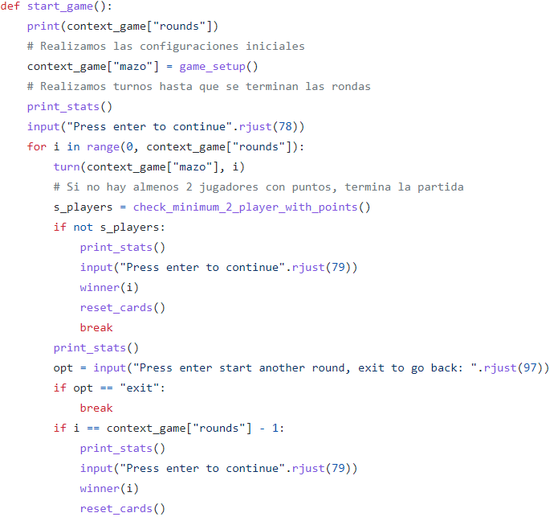
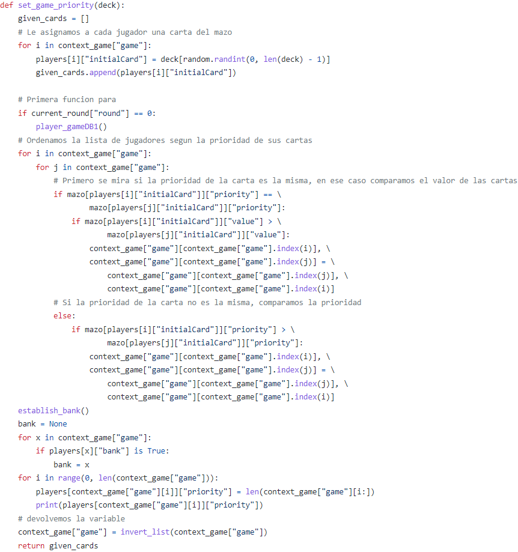
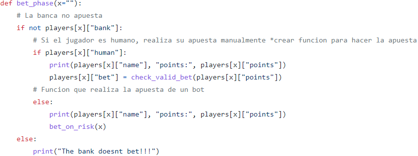
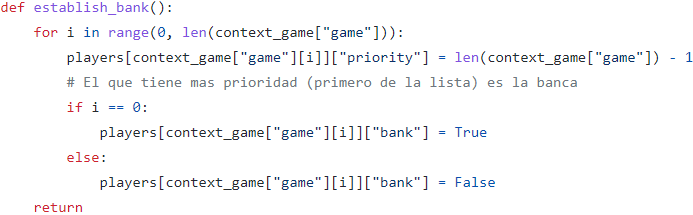

Al empezar la partida (funcion start_game()), antes de dar comienzo al primer turno, se establece el orden de prioridad de jugadores, mediante la función set_game_priority(deck). Aprovechamos esta función para establecer la banca inicial, que será el jugador con la carta de mayor prioridad. Una vez establecidas las prioridades y la banca, empieza el primer turno.
Al comienzo de cada turno guardamos en la variable “bank” a la banca actual, la cual es siempre el último jugador de la lista context_game[“game”]. Hacemos esto para facilitarnos la vida más adelante.
Cada turno, a la hora de establecer las apuestas, si es el turno de la banca, esta no puede realizar apuesta, ya que en la función “bet_phase(x)” distinguimos entre si quien intenta realizar una apuesta es la banca o no.
A la hora de pedir cartas la banca las pide como cualquier otro jugador.
Respecto al reparto de puntos, en caso de que uno o mas jugadores que no sean la banca tengan 7.5, se usa la función “establish_bank()” para convertir al jugador con 7.5 con mayor prioridad en la nueva banca.
   Cuando se está realizando la partida, antes de que empiece el turno de cada jugador, se revisa si el jugador está definido como humano o no en el diccionario players. En caso de no ser humano, la apuesta del jugador se realizará de forma automática en función del tipo de jugador que sea usando la función bet_on_risk, la cual toma como parámetro el nif del jugador. En esta situación, existen tres alternativas:
El valor de la apuesta se guardará en el diccionario players.
A la hora de pedir cartas, dentro de la función card_phase que usa los parámetros deck (lista con los ids de las cartas), given_cards (lista con las cartas que ya han salido) y x (id del jugador). Dentro de esta función, si el jugador no está definido como humano pedirá cartas mientras el porcentaje de pasarse de siete y medio sea menor al número asignado al tipo del jugador. Dicho porcentaje se calcula con la función moreThan7_half que tiene como parámetros los puntos de la ronda del jugador y las cartas disponibles.
La función guarda en una variable la cantidad de cartas que hay en la lista deck y por cada carta cuyo valor haría pasarse al jugador del siete y medio suma 1 y devuelve la división de las cartas perdedoras entre el total de cartas, lo cual es el porcentaje.
La prioridad de los jugadores se establece, principalmente, apoyándonos de dos diccionarios:
Una vez que empieza la partida, hay una función llamada set_game_priority que toma un parámetro “mazo”, el cual es una lista que tiene los id de las cartas del mazo que se van a usar. El funcionamiento de la función consiste en iterar todos los id que hay en context_game [game] y asignarle una de las cartas del mazo, la cual servirá para saber su prioridad.
Una vez tenemos esto, lo que hacemos es ordenar la lista de jugadores de context_game [game] en función del valor de la carta que les ha tocado. Ordenamos utilizando el método de la burbuja, primero comparando la prioridad de la carta y, en caso de ser iguales, el valor de la carta. Además, aprovechamos que la lista está ordenada por prioridad de mayor a menor para determinar la banca inicial, que será el jugador en la posición 0 de la lista, usando la función establish_bank.
Una vez creada la estructura del juego, y que además fuese funcional, el siguiente paso fue hacer que los datos de las partidas fuesen almacenados en la Base de Datos en Azure.
Para hacer posible la conexión juego-BD, utilizamos el módulo mysql en Python, de esta forma, la conexión era cuestión de poner cuatro parámetros i hacer las query correctas.
Primero de todo, antes de enviar algún tipo de información es necesario almacenarla correctamente y hacerla accesible. Por este motivo, declaramos unos diccionarios dónde las keys y valores podían ser los elementos que formarían una fila de información a cada tabla. Como se puede ver en las imágenes, se han diseñado diversas funciones para cumplir con esta tarea. Algunas tiene parámetros para decidir si una función está posicionada antes o después de otra acción, como por ejemplo el comienzo o final de un turno.
Una vez acabada la partida y los datos almacenados, es momento de enviarlos. Como únicamente queremos enviar datos una vez que la partida concluya, esta acción se encuentra al lado del mensaje de Ganador.
Finalmente, con la información proporcionada se harán los rankings, informes, lista de jugadores...